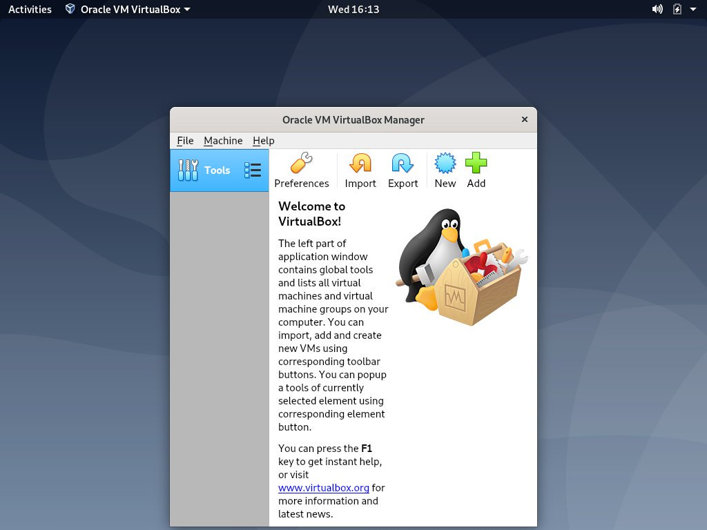

如何在 Debian Linux 10 上安装 VirtualBox
VirtualBox 是一种开源的跨平台虚拟化软件，允许您同时运行多个客户操作系统(虚拟机)。
本教程介绍如何在 Debian 10 Buster 上安装最新的 VirtualBox 。
先决条件
为了能够在 Debian 上安装软件包，您需要以具有 sudo 权限的用户身份登录。
在 Debian 上安装 VirtualBox
VirtualBox 软件包在默认的 Debian 10 存储库中不可用。我们将从 Oracle 存储库下载并安装 VirtualBox 。
在撰写本文时，最新版本的 VirtualBox 是 6.0 。在继续之前，请检查 VirtualBox 下载页面以获取更新版本。
以下步骤描述了如何在 Debian 10 Linux 上安装 VirtualBox ：
-
使用以下
wget命令将 VirtualBox 存储库 GPG 密钥导入系统：wget -q https://www.virtualbox.org/download/oracle_vbox_2016.asc -O- | sudo apt-key add -wget -q https://www.virtualbox.org/download/oracle_vbox.asc -O- | sudo apt-key add -这两个命令都应输出
OK，这意味着密钥已成功导入，并且来自此存储库的包将被视为可信任。 -
接下来，将 VirtualBox apt 存储库添加到源列表：
sudo apt install software-properties-commonsudo add-apt-repository " deb [arch=amd64] http://download.virtualbox.org/virtualbox/debian $(lsb_release -cs) contrib "$(lsb_release -cs)将打印 Debian 代号。在本例中输出buster。 -
启用存储库后，更新包列表并安装最新版本的 VirtualBox ：
sudo apt update && sudo apt install virtualbox-6.0
此时，您已经在 Debian Buster 中安装了 VirtualBox ，并且可以开始使用它。
安装 VirtualBox 扩展包
VirtualBox Extension Pack 为客户机提供了一些有用的功能，例如虚拟 USB 2.0 和 3.0 设备，支持 RDP ，图像加密等。
Extension Pack 的版本必须与已安装的 VirtualBox 的版本相对应。要下载扩展文件类型：
wget https://download.virtualbox.org/virtualbox/6.0.10/Oracle_VM_VirtualBox_Extension_Pack-6.0.10.vbox-extpack
下载完成后，运行以下命令安装扩展包：
sudo VBoxManage extpack install Oracle_VM_VirtualBox_Extension_Pack-6.0.10.vbox-extpack
您将看到 Oracle 许可证，并提示您接受他们的条款和条件。
Do you agree to these license terms and conditions (y/n)?
输入 y 并点击 Enter 。成功安装后，您将看到以下输出：
0%...10%...20%...30%...40%...50%...60%...70%...80%...90%...100%
Successfully installed "Oracle VM VirtualBox Extension Pack".
启动 VirtualBox
现在，在 Debian 系统上安装了 VirtualBox ，您可以通过键入以下命令从命令行启动应用程序：
virtualbox
GNOME 用户可以通过单击 VirtualBox 图标启动 VirtualBox ： Applications- > System Tools- > Oracle VM VirtualBox 。
当 VirtualBox 第一次启动时，应出现如下窗口：

如果您使用的是 KDE ，请单击 VirtualBox 图标 KDE menu- > System- > 启动 VirtualBox Oracle VM VirtualBox 。
或者，如果您使用 Xfce 作为桌面环境，请单击 VirtualBox 图标 (Applications- > System- > Oracle VM VirtualBox) 。
结论
在 Debian 上安装 VirtualBox 是一个相对简单的过程，只需几分钟。
您现在可以安装第一台 Windows 或 Linux 客户机。要查找有关 VirtualBox 的更多信息，请访问 VirtualBox 官方文档页面。